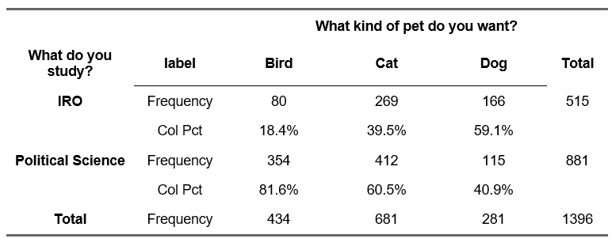
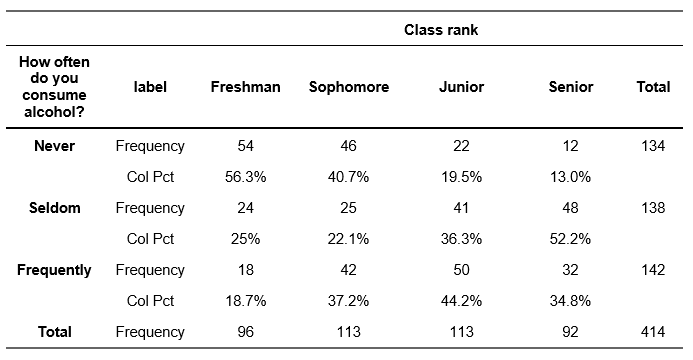

# Openintro example from p. 229 - 235
chisq <- chisq.test(x = c(205, 26, 25, 19),
p = c(0.72, 0.07, 0.12, 0.09))13 Chi-squared and measures of association
13.1 Chi-square test for a one-way table
In R, the function chisq.test performs chi-square tests.
We can use a chi-square test to determine if a sample is representative of the general population. In the book, data from a random sample of 275 jurors in a small county is presented. Assume we have such a one-way table which shows frequency counts for a categorical variable and the population proportion. In this case, we can calculate the chi-square test as follows:
chisq <- chisq.test(-
This conducts a chi-square test and stores the results in an object called
chisq. You can choose a different name forchisq. x = c(205, 26, 25, 19),-
These are the selected jurors (same data as presented in the book).
p = c(0.72, 0.07, 0.12, 0.09))-
These are the population proportions.
We can see the results by looking at the object chisq.
chisq
Chi-squared test for given probabilities
data: c(205, 26, 25, 19)
X-squared = 5.8896, df = 3, p-value = 0.1171The output indicates the title of the test, which variables have been used, the \(\chi^2\) test statistic, the degrees of freedom and the p-value.
You can get the expected frequencies via:
chisq$expected[1] 198.00 19.25 33.00 24.75chisq$expected-
This gives you a vector with expected frequencies. If you have chosen an different name for
chisq, change it here as well.
13.2 Chi-square test for a contingency table
We demonstrate the use of chi-square test for a contingency table with two variables from the 2019 Canadian Election Study:
# Loading the data sets
library(rio)
canada <- import("2019 Canadian Election Study.rds")The first variable cps19_fed_gov_sat measures the general satisfaction with the government and the second variable measures the overall satisfaction with democracy (cps19_demsat).
First, we treat the answer option “Don’t know/ Prefer not to answer” as missing data (see section ‘Recoding missing data’ in week 4).
library(tidyverse) # Load tidyverse for data operations── Attaching packages ─────────────────────────────────────── tidyverse 1.3.2 ──
✔ ggplot2 3.4.4 ✔ purrr 0.3.4
✔ tibble 3.2.1 ✔ dplyr 1.1.2
✔ tidyr 1.2.1 ✔ stringr 1.5.0
✔ readr 2.1.2 ✔ forcats 1.0.0
── Conflicts ────────────────────────────────────────── tidyverse_conflicts() ──
✖ dplyr::filter() masks stats::filter()
✖ dplyr::lag() masks stats::lag()library(flextable) # Load flextable for frequency table
Attaching package: 'flextable'
The following object is masked from 'package:purrr':
compose# Define missing values and drop factor levels that are not present in the data
canada <- canada |>
mutate(cps19_fed_gov_sat = na_if(cps19_fed_gov_sat, "Don't know/ Prefer not to answer")) |>
mutate(cps19_demsat = na_if(cps19_demsat, "Don't know/ Prefer not to answer")) |>
mutate(cps19_fed_gov_sat = droplevels(cps19_fed_gov_sat)) |>
mutate(cps19_demsat = droplevels(cps19_demsat))
#Create a contingency table
table_example <- proc_freq(x = canada,
row = "cps19_demsat",
col = "cps19_fed_gov_sat",
include.row_percent = FALSE,
include.table_percent = FALSE)
table_examplecps19_fed_gov_sat | ||||||
cps19_demsat | label | Very satisfied | Fairly satisfied | Not very satisfied | Not at all satisfied | Total |
Very satisfied | Frequency | 1604 | 2407 | 913 | 804 | 5728 |
Col Pct | 56.28% | 18.49% | 9.4% | 7.44% | ||
Fairly satisfied | Frequency | 1109 | 9077 | 5977 | 4673 | 20836 |
Col Pct | 38.91% | 69.74% | 61.55% | 43.27% | ||
Not very satisfied | Frequency | 115 | 1395 | 2570 | 3826 | 7906 |
Col Pct | 4.04% | 10.72% | 26.46% | 35.43% | ||
Not at all satisfied | Frequency | 22 | 137 | 251 | 1497 | 1907 |
Col Pct | 0.77% | 1.05% | 2.58% | 13.86% | ||
Total | Frequency | 2850 | 13016 | 9711 | 10800 | 36377 |
To calculate \(\chi^2\), we use the chisq.test() function.
chisq <- chisq.test(canada$cps19_demsat, canada$cps19_fed_gov_sat)
chisq
Pearson's Chi-squared test
data: canada$cps19_demsat and canada$cps19_fed_gov_sat
X-squared = 9053.6, df = 9, p-value < 2.2e-16chisq <- chisq.test(-
This conducts a chi-square test and stores the results in an object called
chisq. You can choose a different name forchisq. canada$cps19_demsat, canada$cps19_fed_gov_sat)-
We indicate the two variables that we want to use. Note that you have to use the dollar sign notation here, i.e.
<dataset>$<variable>
The output indicates the title of the test, which variables have been used, the \(\chi^2\) test statistic, the degrees of freedom and the p-value.
Note that the \(\chi^2\) value might be rounded if it is very large (of it is larger than 5 digits). In any case, you can get the exact \(\chi^2\) value by writing:
chisq$statistic X-squared
9053.595 You can get the expected frequencies via:
chisq$expected canada$cps19_fed_gov_sat
canada$cps19_demsat Very satisfied Fairly satisfied Not very satisfied
Very satisfied 448.7671 2049.5271 1529.115
Fairly satisfied 1632.4216 7455.2980 5562.262
Not very satisfied 619.4051 2828.8340 2110.541
Not at all satisfied 149.4062 682.3408 509.082
canada$cps19_fed_gov_sat
canada$cps19_demsat Not at all satisfied
Very satisfied 1700.5910
Fairly satisfied 6186.0186
Not very satisfied 2347.2194
Not at all satisfied 566.1709chisq$expected-
This gives you a table with expected frequencies. If you have chosen an different name for
chisq, change it here as well. Depending on your screen size, the table might be broken into different parts (see ‘Not at all satisfied’).
13.2.1 When expected frequencies are small
If the smallest expected frequencies is lower than 5, you can either:
- combine some levels with a small number of observations to increase the number of observations in these subgroups, or
- use alternative tests, such as the Fisher’s exact test.
Assume you have the following data of 20 countries for which we have gathered data on their OECD membership and their economic development:
# Define dataset
data <- data.frame(oecd = c(rep("no", 9), rep("no", 1), rep("yes", 2), rep("yes", 8)),
econ = c(rep("low", 9), rep("high", 1), rep("low", 2), rep("high", 8)))
# Print a cross table of the two variables in data
table(data$econ, data$oecd)
no yes
high 1 8
low 9 2The expected frequencies in some of the cells will be < 5.
We can calculate the \(\chi^2\) value with chisq.test() as we did previously:
chisq <- chisq.test(data$econ, data$oecd)Warning in chisq.test(data$econ, data$oecd): Chi-squared approximation may be
incorrectchisq
Pearson's Chi-squared test with Yates' continuity correction
data: data$econ and data$oecd
X-squared = 7.2727, df = 1, p-value = 0.007001The output indicates that R automatically calculates ‘Pearson’s Chi-squared test with Yates’ continuity correction’ (see the title of the test). The rest of the output stays the same (which variables have been used, the \(\chi^2\) test statistic, the degrees of freedom and the p-value). However, Yates continuity correction is not our preferred option.
In some instances, R may give you a warning such as “Chi-squared approximation may be incorrect”. This means that the expected values will be very small and therefore the approximations of p may not be right.
Instead, we want to conduct our independence test for a small sample with the Fisher’s exact test. To perform this test in R, use the fisher.test() function as you would do for the Chi-square test:
fisher.t <- fisher.test(data$econ, data$oecd)
fisher.t
Fisher's Exact Test for Count Data
data: data$econ and data$oecd
p-value = 0.005477
alternative hypothesis: true odds ratio is not equal to 1
95 percent confidence interval:
0.0005746857 0.4859089384
sample estimates:
odds ratio
0.03659475 fisher.test <- fisher.test(-
This conducts the Fisher’s exact test and stores the results in an object called
fisher.t. You can choose a different name forfisher.t. fisher.test(data$econ, data$oecd)-
We mention the two variables for the function
fisher.test().
The output indicates the title of the test, which variables have been used and the p-value. We report the output with a statement about the null hypothesis followed by (p = p-value, Fisher’s exact test)
13.3 Reporting a Chi square test and Fisher’s Exact Test
In a scientific paper, you do not include the output from the statistical program (R, SPSS) but report the results in the text. For this example. we use the following data:

Example output R (do not include the output directly in an academic paper):
chisq <- chisq.test(df$study_choice, df$pet_choice)
chisq
Pearson's Chi-squared test
data: df$study_choice and df$pet_choice
X-squared = 124.9, df = 2, p-value < 2.2e-16
Output explanation
- 124.9 is the observed chi square value (\(\chi^2\)).
- df is the degrees of freedom (here: 2).
- the probability of finding the observed (\(\chi^2\), given the null hypothesis (p-value) is given as follows:
- in R, see p-value < 2.2e-16. 2.2e-16 is the scientific notation of 0.00000000000000022. This means the value is very close to zero. R uses this notation automatically for very small numbers. In these cases, write p < 0.001 in your report.
Note: If you calculate the results by hand you write p < “the chosen \(\alpha\)-value”, for example, p < 0.05.
13.3.0.1 Reporting
The correct report includes:
- A conclusion about the null hypothesis; followed by
- \(\chi^2\)(df) = the value of chi square and the degrees of freedom in brackets. The degrees of freedom is calculated as (number of rows – 1)*( number of columns– 1) and can be obtained from the output.
- p = p-value. When working with statistical software, you should report the exact p-value that is displayed.
- in R, small values may be displayed using the scientific notation (e.g. 2.2e-16 is the scientific notation of 0.00000000000000022.) This means that the value is very close to zero. R uses this notation automatically for very small numbers. In these cases, write p < 0.001 in your report.
Note: If you calculate the results by hand you write p < “the chosen \(\alpha\)-value”, for example, p < 0.05.
Report
✓ There is a significant relationship between the type of pet a respondent wants and the choice of study program (\(\chi^2\)(2) = 124.9, p\(<\) 0.001)
13.4 Fisher’s Exact Test
Fisher’s Exact Test should be used in the case of small expected frequencies. Assume you have the following data of 20 countries for which we have gathered data on their OECD membership and their economic development:
no yes
high 1 8
low 9 2Example output R (do not include the output directly in an academic paper):
fisher.test(data$econ, data$oecd)
Fisher's Exact Test for Count Data
data: data$econ and data$oecd
p-value = 0.005477
alternative hypothesis: true odds ratio is not equal to 1
95 percent confidence interval:
0.0005746857 0.4859089384
sample estimates:
odds ratio
0.03659475 13.4.0.1 Reporting
For Fisher’s Exact test, simply write a statement about the null hypothesis followed by the p-value (e.g. p = p-value, Fisher’s exact test).
Report
✓ There is a significant relationship between the membership status of a country to the OECD and its economic development, p \(=\) 0.005, Fisher’s exact test).
13.5 Measures of association
13.5.1 Phi/Cramér’s V
Phi and Cramér’s V are measures of the strength of association between two nominal or ordinal variables. They range from 0 to 1. The DescTools package contains the functions Phi (with a capital P) and CramerV (with a capital C and a capital V). If it is not yet installed you can do so via install.packages("DescTools").
library(DescTools)You can then calculate the measure of association. Note that you can only use the function Phi for 2x2 cross-tables. CramerV works for 2x2 cross-tables (which will give the same result as Phi) and larger cross-tables (Cramér’s V).
Phi(data$econ, data$oecd) #2x2 cross-table[1] 0.7035265CramerV(data$econ, data$oecd) #2x2 cross-table[1] 0.7035265CramerV(canada$cps19_demsat, canada$cps19_fed_gov_sat) #larger cross-table[1] 0.288029213.5.2 Goodman-Kruskal’s Lambda
Goodman-Kruskal’s Lambda (\(\lambda\)) can be calculated using a function from the DescTools package.
library(DescTools)We use Lambda for any sample with an independent variable and a dependent variable. We demonstrate its use with two variables from the 2019 Canadian Election Study. As independent variable we use a variable regarding the respondents’ gender (cps19_gender) and as dependent variable we use party the respondent intents to vote for (cps19_votechoice). We again treat the answer option “Don’t know/ Prefer not to answer” as missing data.
# Define missing values and drop factor levels that are not present in the data
canada <- canada |>
mutate(cps19_votechoice = na_if(cps19_votechoice, "Don't know/ Prefer not to answer")) |>
mutate(cps19_votechoice = droplevels(cps19_votechoice))
#Create a contingency table
table_example <- proc_freq(x = canada,
row = "cps19_votechoice",
col = "cps19_gender",
include.row_percent = FALSE,
include.table_percent = FALSE)
table_examplecps19_gender | |||||
cps19_votechoice | label | A man | A woman | Other (e.g. Trans, non-binary, two-spirit, gender-queer) | Total |
Liberal Party | Frequency | 3776 | 5122 | 51 | 8949 |
Col Pct | 32.98% | 34.15% | 24.52% | ||
Conservative Party | Frequency | 4282 | 4388 | 43 | 8713 |
Col Pct | 37.4% | 29.25% | 20.67% | ||
ndp | Frequency | 1353 | 2896 | 79 | 4328 |
Col Pct | 11.82% | 19.31% | 37.98% | ||
Bloc Québécois | Frequency | 710 | 688 | 6 | 1404 |
Col Pct | 6.2% | 4.59% | 2.88% | ||
Green Party | Frequency | 912 | 1522 | 22 | 2456 |
Col Pct | 7.97% | 10.15% | 10.58% | ||
People's Party | Frequency | 315 | 286 | 4 | 605 |
Col Pct | 2.75% | 1.91% | 1.92% | ||
Another party (please specify) | Frequency | 100 | 98 | 3 | 201 |
Col Pct | 0.87% | 0.65% | 1.44% | ||
Total | Frequency | 11448 | 15000 | 208 | 26656 |
To calculate Lambda, write:
Lambda(x = canada$cps19_votechoice,
y = canada$cps19_gender,
direction = "row")[1] 0.03015756Lambda-
This calculates Goodman-Kruskal’s Lambda. Make sure to use a capital ‘L’ for the function.
x = canada$cps19_votechoice-
Include the variable that is in the rows here (the dependent variable).
y = canada$cps19_gender-
Include the variable that is in the columns here (the independent variable).
direction = "row"-
Direction can take three values:
"symmetric"(default),"row"or"column". If our dependent variable is in the rows, we suggest to set this torow, which calculates the improvement in predicting the row variable if we have information about the column variable.
13.5.2.1 Goodman-Kruskal’s Gamma
Goodman-Kruskal’s Gamma (\(\gamma\)) can also be calculated using a function from the DescTools package.
Goodman-Kruskal’s Gamma is appropriate only when both variables lie on an ordinal scale. We use the two variables from above (the general satisfaction with the government and the overall satisfaction with democracy). To calculate it, write:
GoodmanKruskalGamma(canada$cps19_demsat, canada$cps19_fed_gov_sat)[1] 0.5528955GoodmanKruskalGamma(-
This calculates Goodman-Kruskal’s Gamma Make sure to write the whole function correctly (including capitalization).
canada$cps19_demsat, canada$cps19_fed_gov_sat)-
The two variables that we use for our calculation. The order of the variable names does not matter for the calculation but it is best to keep the same order as usual.
The order of values is very important for the calculation of Gamma. Therefore, always check whether the categories in the variables are in the correct order (for example by making a cross table).
13.6 Reporting measures of association for categorical variables
If you want to include a measure of association for the test result, you can add this to the report.
13.6.1 Phi (\(\phi\)) and Cramér’s V
R will directly provide you with the value of Phi (\(\phi\)) and Cramér’s V when you use the functions Phi() and CramerV().
Example output R (do not include the output directly in an academic paper):
For the OECD data, the value of Phi is:
Phi(data$econ, data$oecd) #2x2 cross-table[1] 0.7035265For the data concerning study choice and pet choice, the value of Cramér’s V is:
CramerV(df$study_choice, df$pet_choice) #larger cross-table[1] 0.2991134
Interpretation
Phi (\(\phi\)) runs from 0 to 1, where:
- 0 is no relationship.
- 1 is a perfect association. Visually, in such cases all of your observations fall along the diagonal cells in the cross table.
Researchers typically use Cohen’s guidelines of interpreting the magnitude of \(\phi\) [@cohen1988]:
A value of at least 0.1 represents a small association.
A value of at least 0.3 represents a medium association.
A value of at least 0.5 represents a large association.
The interpretation of Cramér’s V is the same as for Phi (\(\phi\)). It runs from 0 to 1 and researchers typically use Cohen’s guidelines of interpreting the magnitude. Squaring (\(\phi\)) and Cramér’s V will give you the approximate amount of shared variance between the two variables.
Note that these guidelines are “crude estimates” for interpreting strengths of relationships. As always with rules of thumbs, be careful and consider the type of data that you are working with.
13.6.1.1 Reporting
Phi (\(\phi\)) and Cramér’s V are usually included after the chi-squared test, for example:
Report \(\phi\)
✓ There is a significant relationship between the OECD membership status of a country and the country’s economic development, \(\chi^2\)(1) = 9.90, p = 0.01. This represents a large association, \(\phi\) = 0.704.
13.6.1.1.1 Report Cramér’s V
✓ There is a significant relationship between the type of pet a respondent wants and the choice of study program (\(\chi^2\)(2) = 124.9, p\(<\) 0.001). This represents a medium association, Cramér’s V = 0.299.
13.6.2 Goodman & Kruskal’s Lambda (\(\lambda\)).
Lambda is an asymmetrical measure of association. This means that the value may vary depending on which variable is considered the independent variable and which the dependent variable. In the example above the study choice was the dependent variable.
Example output R (do not include the output directly in an academic paper):
R will directly provide you with the value of Lambda (\(\lambda\)) when you use the function Lambda().
Lambda(table(df$study_choice, df$pet_choice),
direction = "row")[1] 0.09902913
Interpretation
The range of Lambda runs from 0.0 to 1.0. Because it is a measure of proportional reduction in error, a lambda of 0.xx indicates that we make xx% less errors when we have information about the independent variable (compared to when we do not have this information).
A lambda of 0.0 indicates that there is nothing to be gained by using the independent variable to predict the dependent variable. A lambda of 1.0 indicates that the independent variable perfectly predicts of the dependent variable. In other words, by using the independent variable as a predictor, we can predict the dependent variable without any error.
There is no formal way to determine if the value for \(\lambda\) is high or low, and the rules of thumb often depend on the field (e.g. biology, medicine, business, etc.). Rea and Parker (1992) suggest the following:
± 0.00 < 0.10 - Negligible
± 0.10 < 0.20 - Weak
± 0.20 < 0.40 - Moderate
± 0.40 < 0.60 - Relatively strong
± 0.60 < 0.80 - Strong
± 0.80 < 1.00 - Very strong
13.6.2.1 Reporting
Report
✓ There is a weak relationship between the type of pet a respondent wants and the choice of study program λ = 0.099.
13.6.3 Goodman & Kruskal’s Gamma (\(\gamma\))
Goodman-Kruskal’s Gamma (\(\gamma\)) is appropriate only when both variables lie on an ordinal scale. Gamma is defined as an symmetrical measure of association which means that you will get the same value for \(\gamma\) if you switch the dependent and independent variable in your contingency stable. We demonstrate \(\gamma\) using two ordinal variables on class ranks and alcohol consumption of students.

Example output R (do not include the output directly in an academic paper):
R will directly provide you with the value of Gamma (\(\gamma\)) when you use the functions GoodmanKruskalGamma().
GoodmanKruskalGamma(gammadf$alcohol, gammadf$class_rank)[1] 0.3177245
Interpretation
The range of gamma is -1.0 to +1.0. A gamma of 0.0 indicates that there is no relationship between the two variables. In other words, the independent variable does not help at all to predict the dependent variable. A gamma of 1.0 indicates that the dependent variable can be predicted by the independent variable without any error and that the relationship between the variables is positive. Likewise, when gamma is -1.0, the independent variable can perfectly predict the dependent variable with no error but the relationship is negative.
For example, if the value for \(\gamma\) is 0.30, this means that by knowing about the level of the independent variable we can make a 30% better estimate about the dependent variable. Given that the value is positive, we also know the direction: as the level of the independent variable goes up, the level of the dependent variable goes up, too.
There is no formal way to determine if the value for \(\gamma\) is high or low, and the rules of thumb often depend on the field (e.g. biology, medicine, business, etc.). Rea and Parker (1992) suggest the following:
± 0.00 < 0.10 - Negligible
± 0.10 < 0.20 - Weak
± 0.20 < 0.40 - Moderate
± 0.40 < 0.60 - Relatively strong
± 0.60 < 0.80 - Strong
± 0.80 < 1.00 - Very strong
13.6.3.1 Reporting
Report
✓ There is a ‘medium’ sized (or ‘moderate’) positive relationship between the class rank of a respondent and the frequency of drinking alcohol, \(\gamma\) = 0.318